Lab 9: Mapping
Goal: Spin the robot 360° at four marked locations in a room, collect distance readings, then stitch everything together into a map.
For this lab, I decided to perform Orientation Control, meaning I will be using the orientation PID controller I implemented in lab 6. With the PID controller (or in my case just PD), the robot will rotate in 25 degree increments and record the distance with the ToF sensor at each degree.
The added implementation is simple, as I already have the orientation code complete. The idea is to send orientation commands to the robot, and once the robot reaches the target angle, record a distance. After completing a full circle, I will have polar coordinates from one position. Once I calculate polar coordinates from all four positions, I will have the data necessary to build a map.
Implementation
Global Variables
First, I added the following global variables:
const int SCAN_DATA_LEN = 50;
int scan_count = 0;
float scan_orientation = 0;
float scan_distance = 0.0;
int scan_angles[SCAN_DATA_LEN];
float scan_points[SCAN_DATA_LEN];MAP_SCAN
Next, I added the following command for collecting a data point. It accepts PID gains and a target yaw angle, resets the controller state, and starts the orientation PID run.
case MAP_SCAN:
success = robot_cmd.get_next_value(turn_K_p); if (!success) return;
success = robot_cmd.get_next_value(turn_K_i); if (!success) return;
success = robot_cmd.get_next_value(turn_K_d); if (!success) return;
success = robot_cmd.get_next_value(pid_turn_target_yaw); if (!success) return;
success = robot_cmd.get_next_value(scan_count); if (!success) return;
pid_turn_data_count = 0;
pid_turn_prev_error = 0;
pid_turn_integral_term = 0;
pid_turn_position_error = 0;
pid_turn_derivative_term = 0;
tofSensor1.startRanging();
myICM.resetFIFO();
delay(50);
while (!getYawFromDMP()) {}
pid_turn_yaw_offset = pid_turn_yaw;
pid_turn_start_time = millis();
pid_turn_current_time = millis();
pid_turn_last_time = millis();
pid_turn_run_flag = 1;
break;SEND_SCAN_DATA
This command sends all recorded scan data back over Bluetooth.
case SEND_SCAN_DATA:
for (int i = 0; i <= scan_count; i++) {
tx_estring_value.clear();
tx_estring_value.append(scan_angles[i]); tx_estring_value.append(",");
tx_estring_value.append(scan_points[i]);
tx_characteristic_string.writeValue(tx_estring_value.c_str());
delay(10);
}
break;Deadband Modification
The only other change I needed to make was to the deadband portion of the previous OrientationPID code — when the target angle is reached, collect a ToF reading before stopping.
// Deadband
if (abs(pid_turn_position_error) < 2.0) {
getScanDistance();
stop();
return;
}getScanDistance() simply collects the ToF datapoint and stores it alongside the target angle.
Mapping
Data Collection
In order to collect the datapoints, I use the following Python code. This code collects 16 data points, starting at 0 and up to 350 in 25 degree increments.
Kp = 0.18
Ki = 0.0
Kd = 0.01
ble.send_command(CMD.MAP_SCAN, f"{Kp}|{Ki}|{Kd}|0.0|{0}")
time.sleep(2)
for i in range(1, 15):
ble.send_command(CMD.MAP_SCAN, f"{Kp}|{Ki}|{Kd}|25.0|{i}")
time.sleep(2)Here is a picture of the arena with the different scan points highlighted. There are 5 spots in the area to record from.
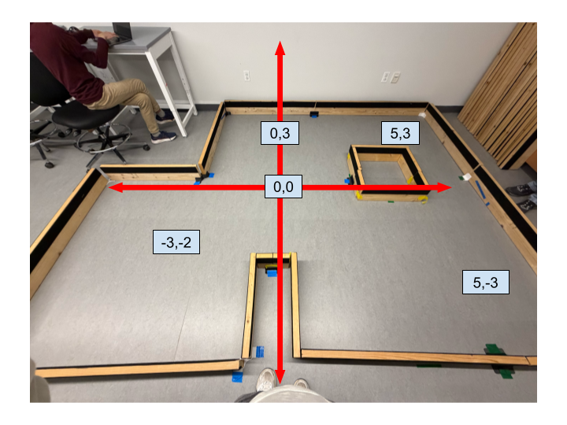
Before mapping, I wanted to see the error I would get during orientation PID, and how much the robot drifts during a scanning session. Here is a plot of DMP yaw angles during a scanning run. As you can see in the plot, the recorded DMP angles stayed pretty close to the desired angles. The error did build up as the run time became longer, with the average angular error ~7 degrees. I would still expect pretty good results because the robot was able to stay close to desired angles.
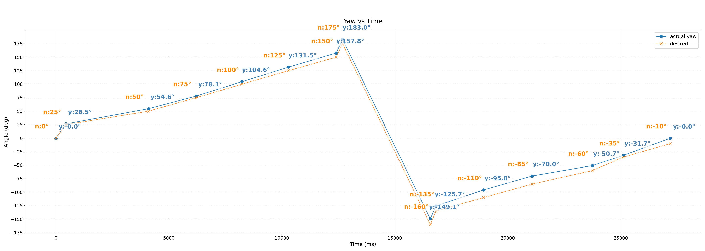
I also conducted a drift test to see how much the robot drifts from the starting position. As you can see in the video, the robot does a good job of staying in the same position. It does overshoot and go past 350/−10 degrees, which is the desired end position.
I spent time tuning my PID controller to get the best results. I had to decrease the min speed for orientation PID, as well as tune the process variables to ensure I accurately turned to target angles. For each spot in the arena, I recorded three times. I did this because during some recording runs, the orientation PID would stall, not record for some angles, and overshoot. After I finished recording, I was left with 15 CSVs, 3 CSVs for each spot.
Transformation Matrices
Before plotting the data, I had to use two transformation matrices to adjust for the ToF sensor to robot frame and the robot to world frame. The ToF sensor was located ~85mm in the positive x direction from the center of the robot.
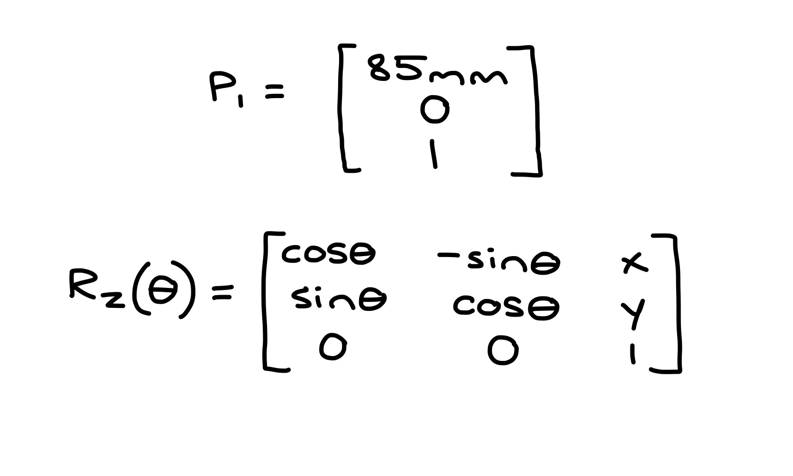
Individual Scans
With the transformation matrices, I can finally plot the data. Below are the polar scans from each of the five positions in the arena.
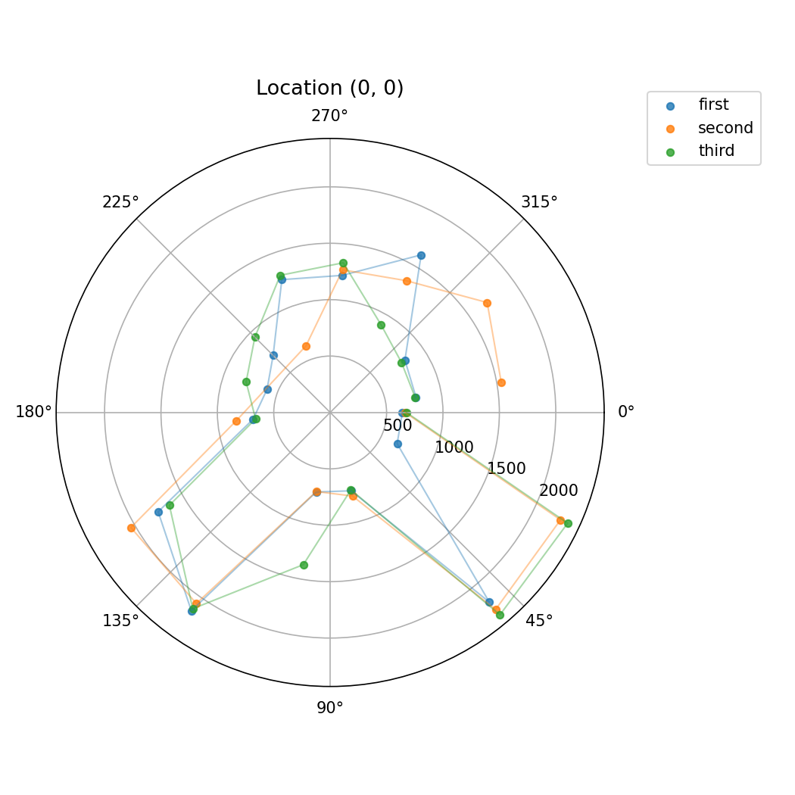
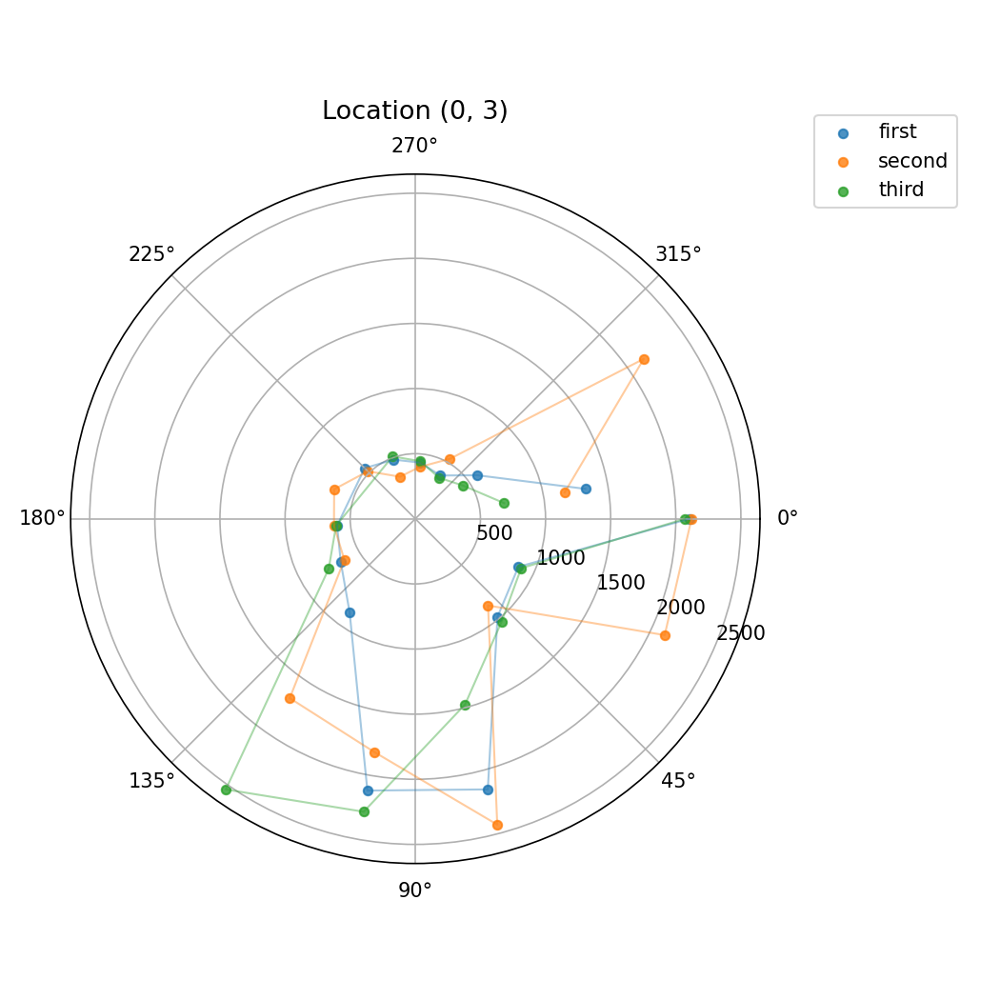
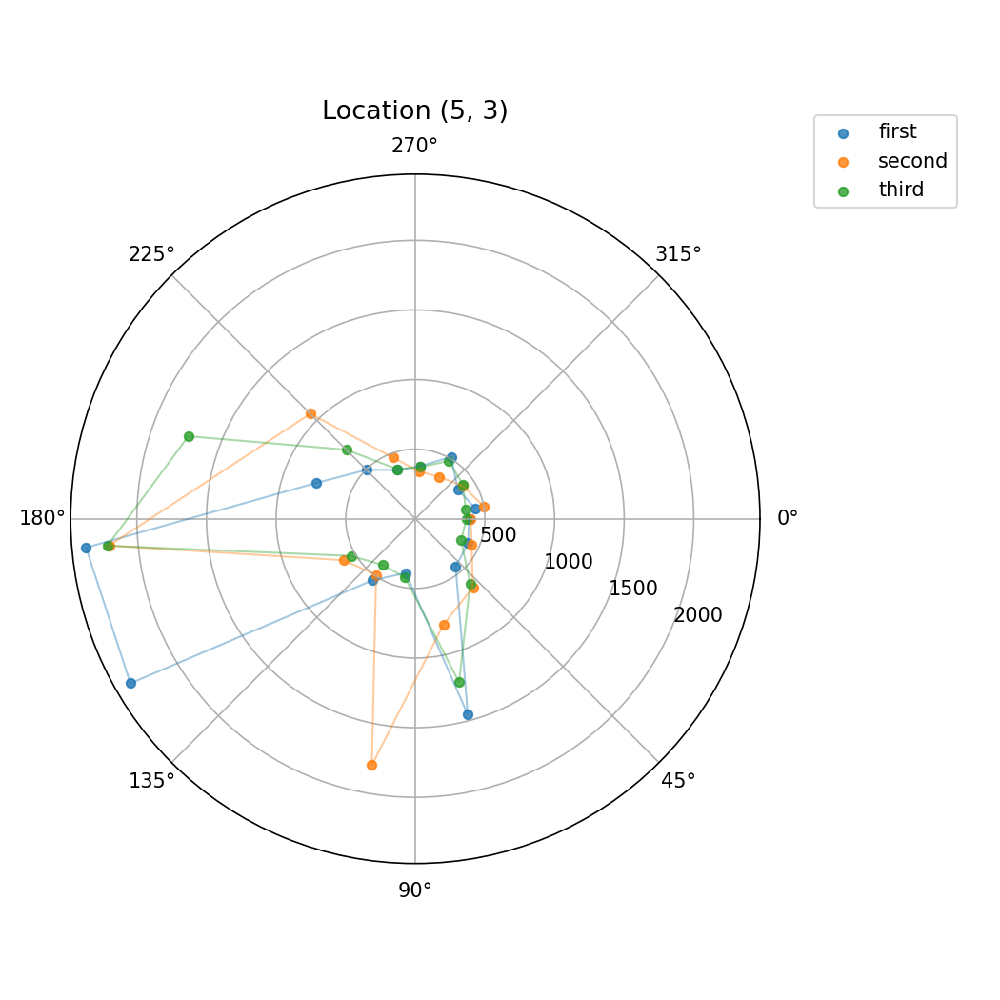
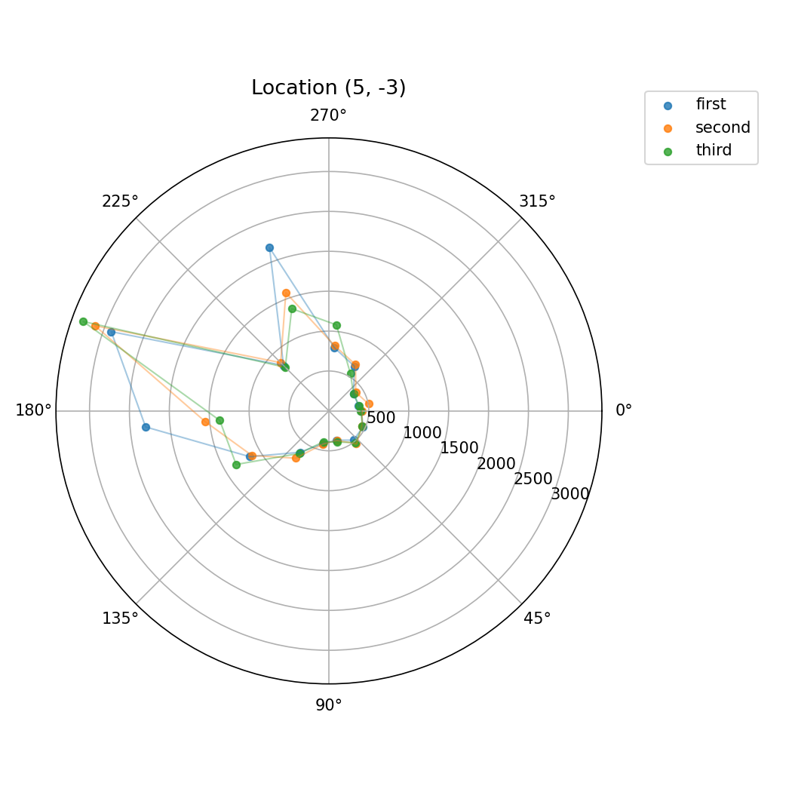
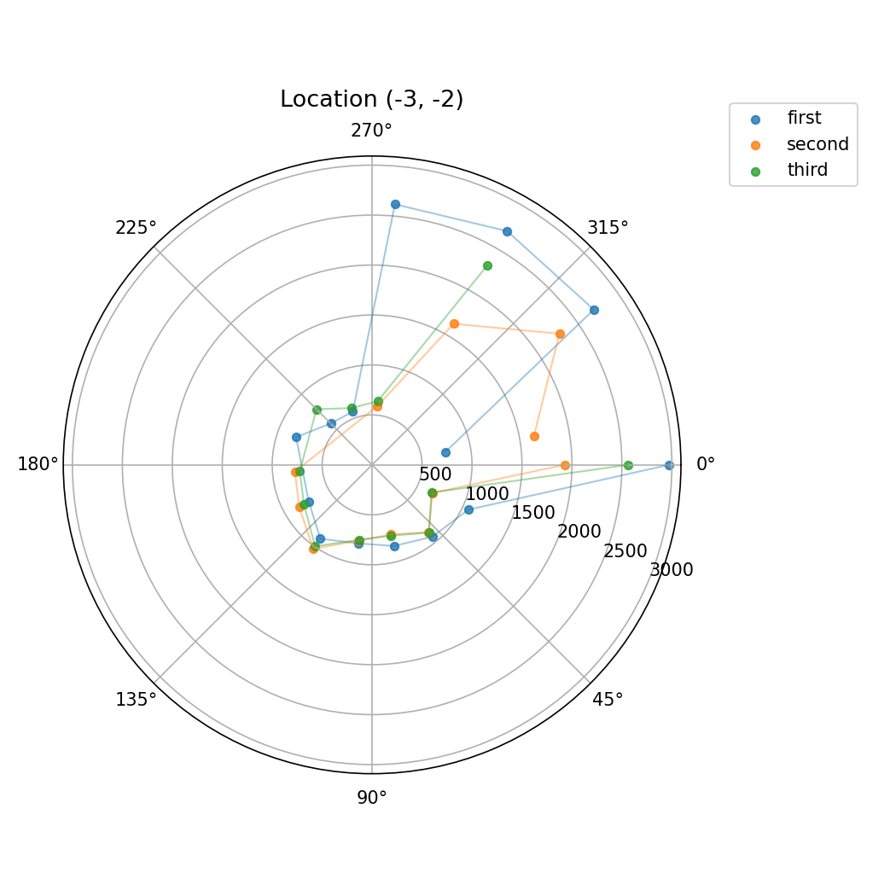
As we can see in the plots, there is a lot of variation. This is due to several factors. The robot does not perfectly turn 25 degrees — the orientation PID is not perfect, and neither is the DMP.
Combined Map
Here is a combined map of all the scans. As expected, there is quite a bit of noise from the accumulated orientation error and ToF variation across runs.
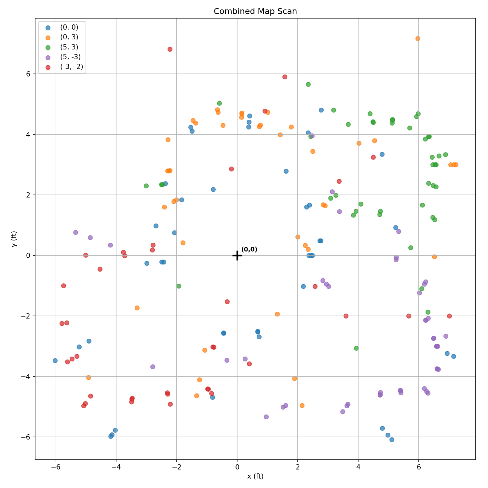
Filtering & Cleanup
I wanted to try to clean up the generated map of the arena. I looked through points in the CSVs, and noticed that sometimes out of the three CSVs per scan spot, two of them would have similar data for an angle, but the third would be completely different due to noise. I filtered out readings for a certain angle if it was past a certain threshold from the median of the three readings. For example, at the origin, I got the following readings for the 25° angle:
655.000, 2253.000, 2323.000
655 is much lower than the other two, so it gets filtered out. This way, noisy outliers are removed without discarding good data.
This filtering helped a lot. Here is the cleaned result:
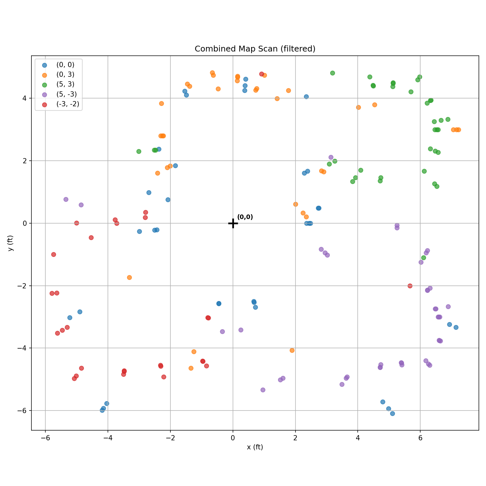
The shape of the room is much clearer. Next, I drew lines to estimate the walls, staying close to what the robot estimated while correcting obvious outliers. Here is the result:
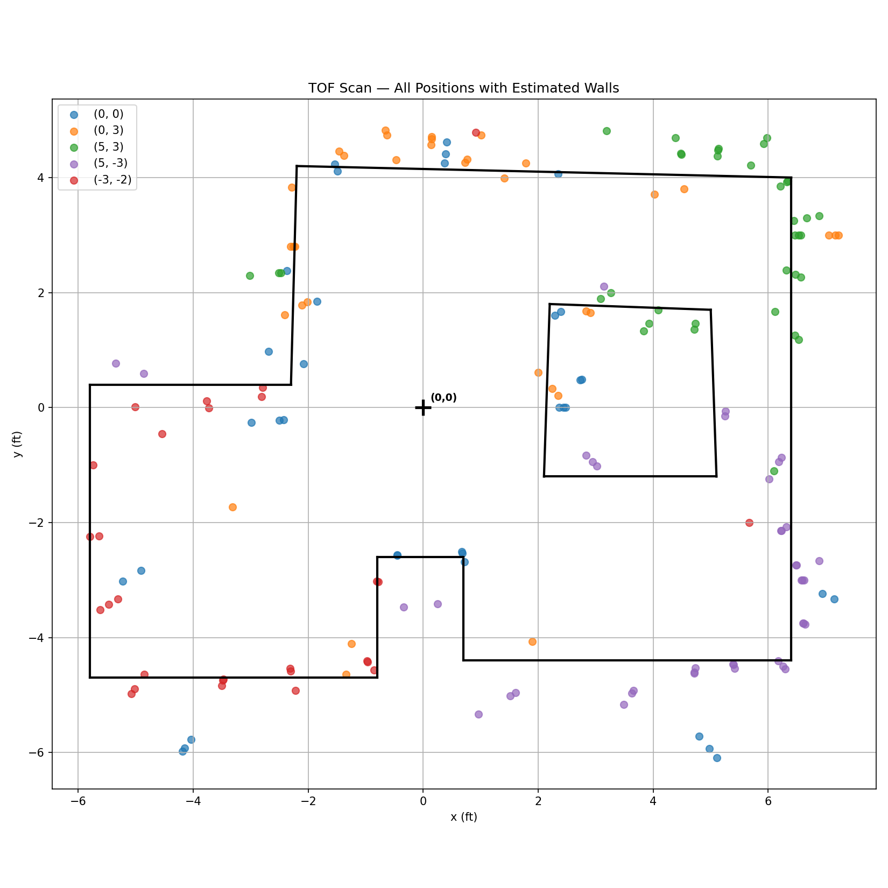
Wall Coordinates
The estimated wall segments, saved as start and end coordinate pairs (in feet):
wall_starts = [(-2.3,0.4),(-5.8,0.4),(-5.8,-4.7),(-0.8,-4.7),(-0.8,-2.6),(0.7,-2.6),(0.7,-4.4),
(6.4,-4.4),(6.4,4.0),(-2.2,4.2),(2.2,1.8),(2.1,-1.2),(5.1,-1.2),(5.0,1.7)]
wall_ends = [(-5.8,0.4),(-5.8,-4.7),(-0.8,-4.7),(-0.8,-2.6),(0.7,-2.6),(0.7,-4.4),(6.4,-4.4),
(6.4,4.0),(-2.2,4.2),(-2.3,0.4),(2.1,-1.2),(5.1,-1.2),(5.0,1.7),(2.2,1.8)]Collaboration
I referenced Lucca's lab page for help with planning out how to carry out a scanning session. This lab took a lot of debugging, and I talked to Claude to brainstorm why the PID controller was overshooting and how I could tune my variables to improve performance. I also heavily relied on Claude for plotting the data, and it helped me do the filtering step where I cleaned my maps up. I also used Claude to style the website.